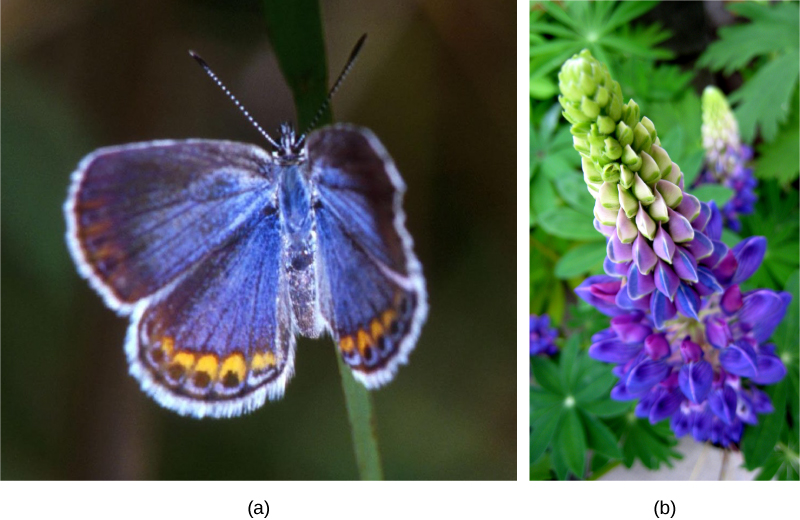
Ecosystem ecology is an extension of organismal, population, and community ecology. The ecosystem comprises all the biotic components (living things) and abiotic components (non-living things) in a particular geographic area. Some of the abiotic components include air, water, soil, and climate. Ecosystem biologists study how nutrients and energy are stored and moved among organisms and the surrounding atmosphere, soil, and water.
Wild lupine and Karner blue butterflies live in an oak-pine barren habitat in portions of Indiana, Michigan, Minnesota, Wisconsin, and New York (Figure 20.1). This habitat is characterized by natural disturbance in the form of fire and nutrient-poor soils that are low in nitrogen—important factors in the distribution of the plants that live in this habitat. Researchers interested in ecosystem ecology study the importance of limited resources in this ecosystem and the movement of resources (such as nutrients) through the biotic and abiotic portions of the ecosystem. Researchers also examine how organisms have adapted to their ecosystem.
- 20.1 Energy Flow through Ecosystems
- Describe the basic types of ecosystems on Earth
- Differentiate between food chains and food webs and recognize the importance of each
- Describe how organisms acquire energy in a food web and in associated food chains
- Explain how the efficiency of energy transfers between trophic levels affects ecosystems
- 20.2 Biogeochemical Cycles
- Discuss the biogeochemical cycles of water, carbon, nitrogen, phosphorus, and sulfur
- Explain how human activities have impacted these cycles and the resulting potential consequences for Earth
- 20.3 Terrestrial Biomes
- Identify the two major abiotic factors that determine the type of terrestrial biome in an area
- Recognize distinguishing characteristics of each of the eight major terrestrial biomes
- 20.4 Aquatic and Marine Biomes
- Describe the effects of abiotic factors on the composition of plant and animal communities in aquatic biomes
- Compare and contrast the characteristics of the ocean zones
- Describe the characteristics of the major marine and aquatic biomes
| # | Lesson | Key Concepts | Source |
|---|---|---|---|
| 1 | Energy Flow through Ecosystems — Part 1 | Ecosystem types (freshwater, marine, terrestrial), ecology of ecosystems, competition for limited resources, disturbance and succession, resistance and resilience, food chains, food webs, trophic levels, grazing vs detrital food webs | CB 20.1 (first half) |
| 2 | Energy Flow through Ecosystems — Part 2 | Autotrophs and heterotrophs, photoautotrophs, chemoautotrophs, gross primary productivity, net primary productivity, biomagnification, DDT, PCBs, heavy metals | CB 20.1 (second half) |
| 3 | Biogeochemical Cycles | Water cycle, carbon cycle (biological and biogeochemical), nitrogen cycle (fixation, ammonification, nitrification, denitrification), phosphorus cycle, sulfur cycle, dead zones, eutrophication | CB 20.2 |
| 4 | Terrestrial Biomes | Climate and biomes, tropical rainforests, savannas, deserts, chaparral, temperate grasslands, temperate forests, boreal forests, tundra | CB 20.3 |
| 5 | Aquatic and Marine Biomes | Freshwater biomes (lakes, rivers), ocean zones (photic, aphotic, pelagic, benthic), coral reefs, estuaries, wetlands | CB 20.4 |
| 6 | Practice Test | All topics — comprehensive assessment | All |
| Standard | Description | Lessons |
|---|---|---|
| BIO.9a | Investigating and understanding dynamic equilibria within populations, communities, and ecosystems | 1, 2, 3, 4, 5 |
| BIO.9b | Understanding interactions within and among populations including carrying capacities, limiting factors, and growth curves | 1, 2 |
| BIO.9c | Understanding the role of natural selection in populations and communities | 4, 5 |
| BIO.9d | Understanding nutrient cycling with energy flow through ecosystems | 1, 2, 3 |
| BIO.9e | Understanding the effects of natural events and human activities on ecosystems | 2, 3, 4, 5 |
- Describe the basic types of ecosystems on Earth
- Differentiate between food chains and food webs and recognize the importance of each
- Describe how organisms acquire energy in a food web and in associated food chains
- Explain how the efficiency of energy transfers between trophic levels affects ecosystems
An ecosystem is a community of living organisms and their abiotic (non-living) environment. Ecosystems can be small, such as the tide pools found near the rocky shores of many oceans, or large, such as those found in the tropical rainforest of the Amazon in Brazil (Figure 20.2).
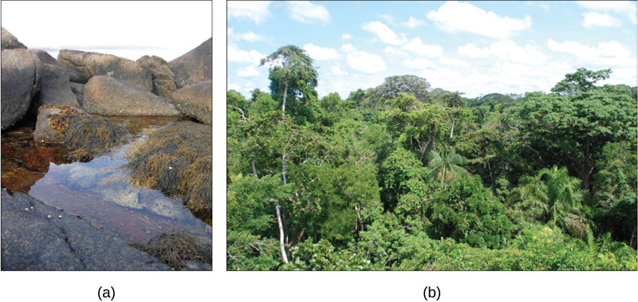
There are three broad categories of ecosystems based on their general environment: freshwater, marine, and terrestrial. Within these three categories are individual ecosystem types based on the environmental habitat and organisms present.
Life in an ecosystem often involves competition for limited resources, which occurs both within a single species and between different species. Organisms compete for food, water, sunlight, space, and mineral nutrients. These resources provide the energy for metabolic processes and the matter to make up organisms' physical structures. Other critical factors influencing community dynamics are the components of its physical environment: a habitat's climate (seasons, sunlight, and rainfall), elevation, and geology. These can all be important environmental variables that determine which organisms can exist within a particular area.
Freshwater ecosystems are the least common, occurring on only 1.8 percent of Earth's surface. These systems comprise lakes, rivers, streams, and springs; they are quite diverse, and support a variety of animals, plants, fungi, protists and prokaryotes.
Marine ecosystems are the most common, comprising 75 percent of Earth's surface and consisting of three basic types: shallow ocean, deep ocean water, and deep ocean bottom. Shallow ocean ecosystems include extremely biodiverse coral reef ecosystems, yet the deep ocean water is known for large numbers of plankton and krill (small crustaceans) that support it. These two environments are especially important to aerobic respirators worldwide, as the phytoplankton perform 40 percent of all photosynthesis on Earth. Although not as diverse as the other two, deep ocean bottom ecosystems contain a wide variety of marine organisms. Such ecosystems exist even at depths where light is unable to penetrate through the water.
Terrestrial ecosystems, also known for their diversity, are grouped into large categories called biomes. A biome is a large-scale community of organisms, primarily defined on land by the dominant plant types that exist in geographic regions of the planet with similar climatic conditions. Examples of biomes include tropical rainforests, savannas, deserts, grasslands, temperate forests, and tundras. Grouping these ecosystems into just a few biome categories obscures the great diversity of the individual ecosystems within them. For example, the saguaro cacti (Carnegiea gigantean) and other plant life in the Sonoran Desert, in the United States, are relatively diverse compared with the desolate rocky desert of Boa Vista, an island off the coast of Western Africa (Figure 20.3).
Ecosystems are complex with many interacting parts. They are routinely exposed to various disturbances: changes in the environment that affect their compositions, such as yearly variations in rainfall and temperature. Many disturbances are a result of natural processes. For example, when lightning causes a forest fire and destroys part of a forest ecosystem, the ground is eventually populated with grasses, followed by bushes and shrubs, and later mature trees: thus, the forest is restored to its former state. This process is so universal that ecologists have given it a name—succession. The impact of environmental disturbances caused by human activities is now as significant as the changes wrought by natural processes. Human agricultural practices, air pollution, acid rain, global deforestation, overfishing, oil spills, and illegal dumping on land and into the ocean all have impacts on ecosystems.
Equilibrium is a dynamic state of an ecosystem in which, despite changes in species numbers and occurrence, biodiversity remains somewhat constant. In ecology, two parameters are used to measure changes in ecosystems: resistance and resilience. The ability of an ecosystem to remain at equilibrium in spite of disturbances is called resistance. The speed at which an ecosystem recovers equilibrium after being disturbed is called resilience. Ecosystem resistance and resilience are especially important when considering human impact. The nature of an ecosystem may change to such a degree that it can lose its resilience entirely. This process can lead to the complete destruction or irreversible altering of the ecosystem.
A food chain is a linear sequence of organisms through which nutrients and energy pass as one organism eats another; the levels in the food chain are producers, primary consumers, higher-level consumers, and finally decomposers. These levels are used to describe ecosystem structure and dynamics. There is a single path through a food chain. Each organism in a food chain occupies a specific trophic level (energy level), its position in the food chain or food web.
In many ecosystems, the base, or foundation, of the food chain consists of photosynthetic organisms (plants or phytoplankton), which are called producers. The organisms that consume the producers are herbivores: the primary consumers. Secondary consumers are usually carnivores that eat the primary consumers. Tertiary consumers are carnivores that eat other carnivores. Higher-level consumers feed on the next lower trophic levels, and so on, up to the organisms at the top of the food chain: the apex consumers. In the Lake Ontario food chain, shown in Figure 20.4, the Chinook salmon is the apex consumer at the top of this food chain.
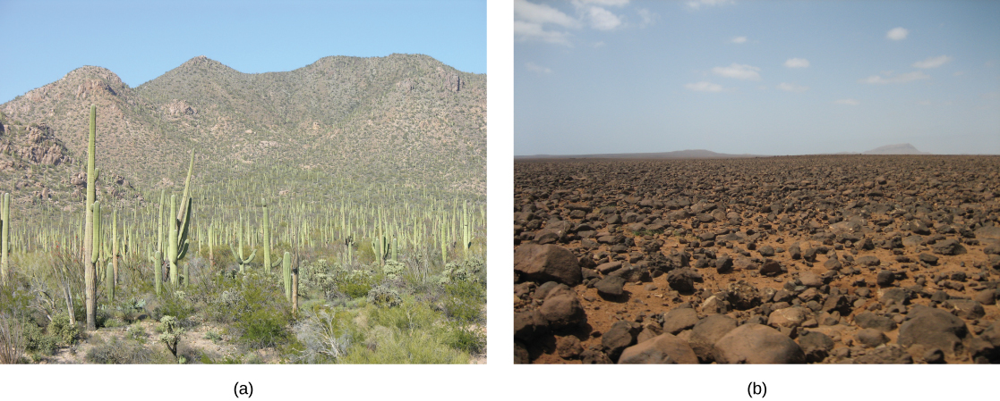
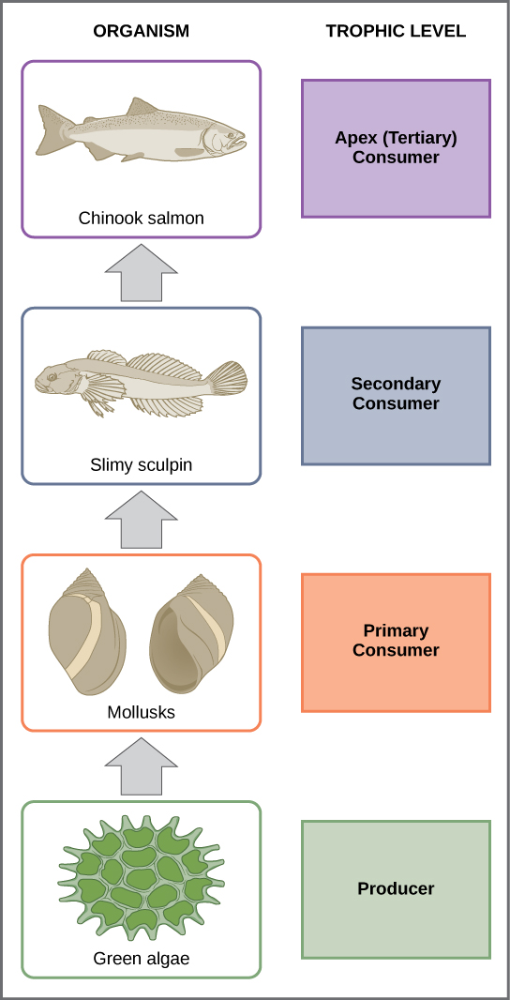
One major factor that limits the number of steps in a food chain is energy. Energy is lost at each trophic level and between trophic levels as heat and in the transfer to decomposers (Figure 20.5). Thus, after a limited number of trophic energy transfers, the amount of energy remaining in the food chain may not be great enough to support viable populations at yet a higher trophic level.
There is a one problem when using food chains to describe most ecosystems. Even when all organisms are grouped into appropriate trophic levels, some of these organisms can feed on more than one trophic level; likewise, some of these organisms can also be fed on from multiple trophic levels. In addition, species feed on and are eaten by more than one species. In other words, the linear model of ecosystems, the food chain, is a hypothetical, overly simplistic representation of ecosystem structure. A holistic model—which includes all the interactions between different species and their complex interconnected relationships with each other and with the environment—is a more accurate and descriptive model for ecosystems. A food web is a concept that accounts for the multiple trophic (feeding) interactions between each species and the many species it may feed on, or that feed on it. In a food web, the several trophic connections between each species and the other species that interact with it may cross multiple trophic levels. The matter and energy movements of virtually all ecosystems are more accurately described by food webs (Figure 20.6).
Two general types of food webs are often shown interacting within a single ecosystem. A grazing food web has plants or other photosynthetic organisms at its base, followed by herbivores and various carnivores. A detrital food web consists of a base of organisms that feed on decaying organic matter (dead organisms), including decomposers (which break down dead and decaying organisms) and detritivores (which consume organic detritus). These organisms are usually bacteria, fungi, and invertebrate animals that recycle organic material back into the biotic part of the ecosystem as they themselves are consumed by other organisms. As ecosystems require a method to recycle material from dead organisms, grazing food webs have an associated detrital food web. For example, in a meadow ecosystem, plants may support a grazing food web of different organisms, primary and other levels of consumers, while at the same time supporting a detrital food web of bacteria and fungi feeding off dead plants and animals. Simultaneously, a detrital food web can contribute energy to a grazing food web, as when a robin eats an earthworm.
Describe the three broad categories of ecosystems (freshwater, marine, terrestrial) and give a key characteristic of each. Then explain the difference between a food chain and a food web, and describe the roles of producers, primary consumers, secondary consumers, and decomposers. Finally, compare grazing food webs and detrital food webs.
- Describe how organisms acquire energy in a food web and in associated food chains
- Explain how the efficiency of energy transfers between trophic levels affects ecosystems
- Distinguish between gross primary productivity and net primary productivity
- Explain biomagnification and its consequences for ecosystems and human health
All living things require energy in one form or another. Energy is used by most complex metabolic pathways (usually in the form of ATP), especially those responsible for building large molecules from smaller compounds. Living organisms would not be able to assemble macromolecules (proteins, lipids, nucleic acids, and complex carbohydrates) from their monomers without a constant energy input.
Food-web diagrams illustrate how energy flows directionally through ecosystems. They can also indicate how efficiently organisms acquire energy, use it, and how much remains for use by other organisms of the food web. Energy is acquired by living things in two ways: autotrophs harness light or chemical energy and heterotrophs acquire energy through the consumption and digestion of other living or previously living organisms.
Photosynthetic and chemosynthetic organisms are autotrophs, which are organisms capable of synthesizing their own food (more specifically, capable of using inorganic carbon as a carbon source). Photosynthetic autotrophs (photoautotrophs) use sunlight as an energy source, and chemosynthetic autotrophs (chemoautotrophs) use inorganic molecules as an energy source. Autotrophs are critical for most ecosystems: they are the producer trophic level. Without these organisms, energy would not be available to other living organisms, and life itself would not be possible.
Photoautotrophs, such as plants, algae, and photosynthetic bacteria, are the energy source for a majority of the world's ecosystems. These ecosystems are often described by grazing and detrital food webs. Photoautotrophs harness the Sun's solar energy by converting it to chemical energy in the form of ATP (and NADP). The energy stored in ATP is used to synthesize complex organic molecules, such as glucose. The rate at which photosynthetic producers incorporate energy from the Sun is called gross primary productivity. However, not all of the energy incorporated by producers is available to the other organisms in the food web because producers must also grow and reproduce, which consumes energy. Net primary productivity is the energy that remains in the producers after accounting for these organisms' respiration and heat loss. The net productivity is then available to the primary consumers at the next trophic level.
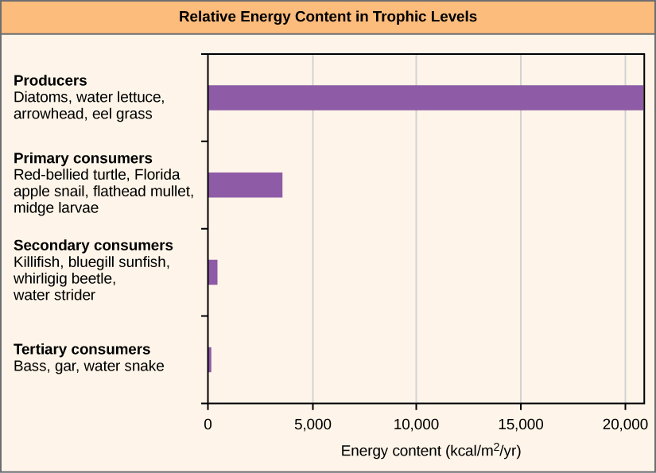
Chemoautotrophs are primarily bacteria and archaea that are found in rare ecosystems where sunlight is not available, such as those associated with dark caves or hydrothermal vents at the bottom of the ocean (Figure 20.7). Many chemoautotrophs in hydrothermal vents use hydrogen sulfide (H2S), which is released from the vents as a source of chemical energy; this allows them to synthesize complex organic molecules, such as glucose, for their own energy and, in turn, supplies energy to the rest of the ecosystem.
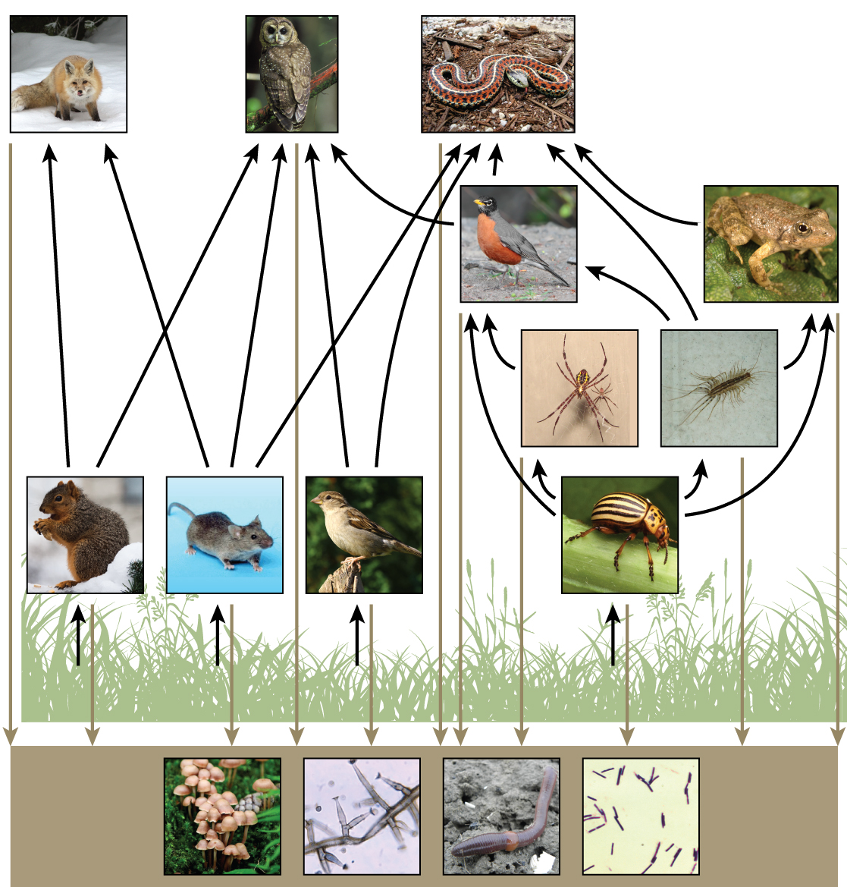
One of the most important consequences of ecosystem dynamics in terms of human impact is biomagnification. Biomagnification is the increasing concentration of persistent, toxic substances in organisms at each successive trophic level. These are substances that are fat soluble, not water soluble, and are stored in the fat reserves of each organism. Many substances have been shown to biomagnify, including classical studies with the pesticide dichlorodiphenyltrichloroethane (DDT), which were described in the 1960s bestseller, Silent Spring by Rachel Carson. DDT was a commonly used pesticide before its dangers to apex consumers, such as the bald eagle, became known. In aquatic ecosystems, organisms from each trophic level consumed many organisms in the lower level, which caused DDT to increase in birds (apex consumers) that ate fish. Thus, the birds accumulated sufficient amounts of DDT to cause fragility in their eggshells. This effect increased egg breakage during nesting and was shown to have devastating effects on these bird populations. The use of DDT was banned in the United States in the 1970s.
Other substances that biomagnify are polychlorinated biphenyls (PCB), which were used as coolant liquids in the United States until their use was banned in 1979, and heavy metals, such as mercury, lead, and cadmium. These substances are best studied in aquatic ecosystems, where predatory fish species accumulate very high concentrations of toxic substances that are at quite low concentrations in the environment and in producers. As illustrated in a study performed by the NOAA in the Saginaw Bay of Lake Huron of the North American Great Lakes (Figure 20.8), PCB concentrations increased from the producers of the ecosystem (phytoplankton) through the different trophic levels of fish species. The apex consumer, the walleye, has more than four times the amount of PCBs compared to phytoplankton. Also, based on results from other studies, birds that eat these fish may have PCB levels at least one order of magnitude higher than those found in the lake fish.
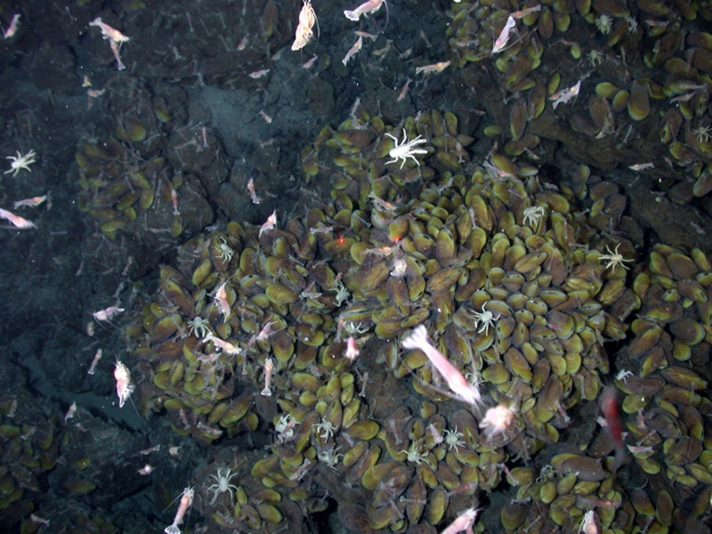
Other concerns have been raised by the biomagnification of heavy metals, such as mercury and cadmium, in certain types of seafood. The United States Environmental Protection Agency recommends that pregnant people and young children should not consume any swordfish, shark, king mackerel, or tilefish because of their high mercury content. These individuals are advised to eat fish low in mercury: salmon, shrimp, pollock, and catfish. Biomagnification is a good example of how ecosystem dynamics can affect our everyday lives, even influencing the food we eat.
Compare autotrophs and heterotrophs and explain how each acquires energy. Distinguish between gross primary productivity and net primary productivity. Then explain what biomagnification is, using the example of DDT and its effects on bird populations to illustrate the concept.
- Discuss the biogeochemical cycles of water, carbon, nitrogen, phosphorus, and sulfur
- Explain how human activities have impacted these cycles and the resulting potential consequences for Earth
Energy flows directionally through ecosystems, entering as sunlight (or inorganic molecules for chemoautotrophs) and leaving as heat during the transfers between trophic levels. Rather than flowing through an ecosystem, the matter that makes up living organisms is conserved and recycled. The six most common elements associated with organic molecules—carbon, nitrogen, hydrogen, oxygen, phosphorus, and sulfur—take a variety of chemical forms and may exist for long periods in the atmosphere, on land, in water, or beneath Earth's surface. Geologic processes, such as weathering, erosion, water drainage, and the subduction of the continental plates, all play a role in the cycling of elements on Earth. Because geology and chemistry have major roles in the study of this process, the recycling of inorganic matter between living organisms and their nonliving environment is called a biogeochemical cycle.
Water, which contains hydrogen and oxygen, is essential to all living processes. The hydrosphere is the area of Earth where water movement and storage occurs: as liquid water on the surface (rivers, lakes, oceans) and beneath the surface (groundwater) or ice, (polar ice caps and glaciers), and as water vapor in the atmosphere. Carbon is found in all organic macromolecules and is an important constituent of fossil fuels. Nitrogen is a major component of our nucleic acids and proteins and is critical to human agriculture. Phosphorus, a major component of nucleic acids, is one of the main ingredients (along with nitrogen) in artificial fertilizers used in agriculture, which has environmental impacts on our surface water. Sulfur, critical to the three-dimensional folding of proteins (as in disulfide binding), is released into the atmosphere by the burning of fossil fuels.
The cycling of these elements is interconnected. For example, the movement of water is critical for the leaching of nitrogen and phosphate into rivers, lakes, and oceans. The ocean is also a major reservoir for carbon. Thus, mineral nutrients are cycled, either rapidly or slowly, through the entire biosphere between the biotic and abiotic world and from one living organism to another.
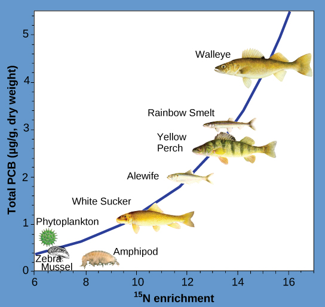
Water is essential for all living processes. The human body is more than one-half water and human cells are more than 70 percent water. Thus, most land animals need a supply of fresh water to survive. Of the stores of water on Earth, 97.5 percent is salt water (Figure 20.9). Of the remaining water, 99 percent is locked as underground water or ice. Thus, less than one percent of fresh water is present in lakes and rivers. Many living things are dependent on this small amount of surface fresh water supply, a lack of which can have important effects on ecosystem dynamics. Humans, of course, have developed technologies to increase water availability, such as digging wells to harvest groundwater, storing rainwater, and using desalination to obtain drinkable water from the ocean. Although this pursuit of drinkable water has been ongoing throughout human history, the supply of fresh water continues to be a major issue in modern times.
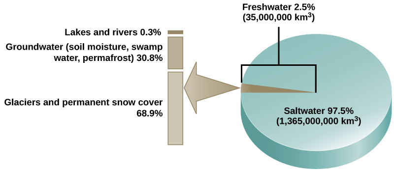
The various processes that occur during the cycling of water are illustrated in Figure 20.10. The processes include the following: evaporation and sublimation; condensation and precipitation; subsurface water flow; surface runoff and snowmelt; and streamflow.
The water cycle is driven by the Sun's energy as it warms the oceans and other surface waters. This leads to evaporation (water to water vapor) of liquid surface water and sublimation (ice to water vapor) of frozen water, thus moving large amounts of water into the atmosphere as water vapor. Over time, this water vapor condenses into clouds as liquid or frozen droplets and eventually leads to precipitation (rain or snow), which returns water to Earth's surface. Rain reaching Earth's surface may evaporate again, flow over the surface, or percolate into the ground. Most easily observed is surface runoff: the flow of fresh water either from rain or melting ice. Runoff can make its way through streams and lakes to the oceans or flow directly to the oceans themselves.
In most natural terrestrial environments rain encounters vegetation before it reaches the soil surface. A significant percentage of water evaporates immediately from the surfaces of plants. What is left reaches the soil and begins to move down. Surface runoff will occur only if the soil becomes saturated with water in a heavy rainfall. Most water in the soil will be taken up by plant roots. The plant will use some of this water for its own metabolism, and some of that will find its way into animals that eat the plants, but much of it will be lost back to the atmosphere through a process known as evapotranspiration. Water enters the vascular system of the plant through the roots and evaporates, or transpires, through the stomata of the leaves. Water in the soil that is not taken up by a plant and that does not evaporate is able to percolate into the subsoil and bedrock. Here it forms groundwater.
Groundwater is a significant reservoir of fresh water. It exists in the pores between particles in sand and gravel, or in the fissures in rocks. Shallow groundwater flows slowly through these pores and fissures and eventually finds its way to a stream or lake where it becomes a part of the surface water again. Streams do not flow because they are replenished from rainwater directly; they flow because there is a constant inflow from groundwater below. Some groundwater is found very deep in the bedrock and can persist there for millennia. Most groundwater reservoirs, or aquifers, are the source of drinking or irrigation water drawn up through wells. In many cases these aquifers are being depleted faster than they are being replenished by water percolating down from above.
Rain and surface runoff are major ways in which minerals, including carbon, nitrogen, phosphorus, and sulfur, are cycled from land to water. The environmental effects of runoff will be discussed later as these cycles are described.
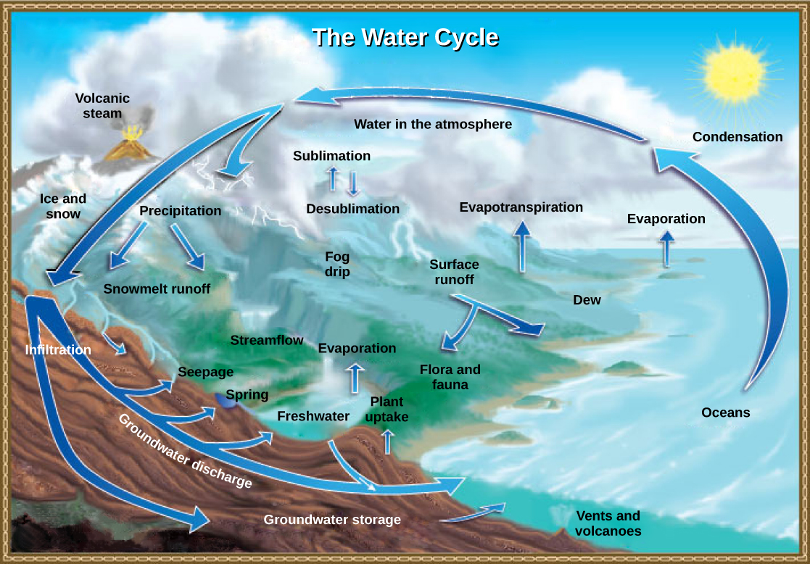
Carbon is the fourth most abundant element in living organisms. Carbon is present in all organic molecules, and its role in the structure of macromolecules is of primary importance to living organisms. Carbon compounds contain energy, and many of these compounds from plants and algae have remained stored as fossilized carbon, which humans use as fuel. Since the 1800s, the use of fossil fuels has accelerated. As global demand for Earth's limited fossil fuel supplies has risen since the beginning of the Industrial Revolution, the amount of carbon dioxide in our atmosphere has increased as the fuels are burned. This increase in carbon dioxide has been associated with climate change and is a major environmental concern worldwide.
The carbon cycle is most easily studied as two interconnected subcycles: one dealing with rapid carbon exchange among living organisms and the other dealing with the long-term cycling of carbon through geologic processes. The entire carbon cycle is shown in Figure 20.11.
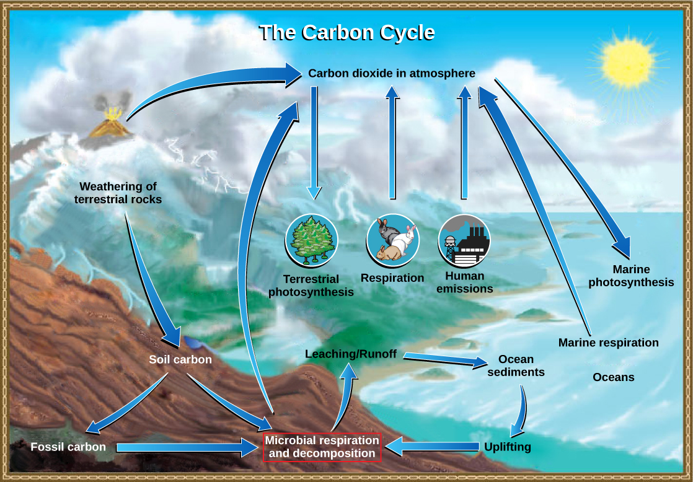
Living organisms are connected in many ways, even between ecosystems. A good example of this connection is the exchange of carbon between heterotrophs and autotrophs within and between ecosystems by way of atmospheric carbon dioxide. Carbon dioxide is the basic building block that autotrophs use to build multi-carbon, high-energy compounds, such as glucose. The energy harnessed from the Sun is used by these organisms to form the covalent bonds that link carbon atoms together. These chemical bonds store this energy for later use in the process of respiration. Most terrestrial autotrophs obtain their carbon dioxide directly from the atmosphere, while marine autotrophs acquire it in the dissolved form (carbonic acid, HCO3–). However the carbon dioxide is acquired, a byproduct of fixing carbon in organic compounds is oxygen. Photosynthetic organisms are responsible for maintaining approximately 21 percent of the oxygen content of the atmosphere that we observe today.
The partners in biological carbon exchange are the heterotrophs (especially the primary consumers, largely herbivores). Heterotrophs acquire the high-energy carbon compounds from the autotrophs by consuming them and breaking them down by respiration to obtain cellular energy, such as ATP. The most efficient type of respiration, aerobic respiration, requires oxygen obtained from the atmosphere or dissolved in water. Thus, there is a constant exchange of oxygen and carbon dioxide between the autotrophs (which need the carbon) and the heterotrophs (which need the oxygen). Autotrophs also respire and consume the organic molecules they form: using oxygen and releasing carbon dioxide. They release more oxygen gas as a waste product of photosynthesis than they use for their own respiration; therefore, there is excess available for the respiration of other aerobic organisms. Gas exchange through the atmosphere and water is one way that the carbon cycle connects all living organisms on Earth.
The movement of carbon through land, water, and air is complex, and, in many cases, it occurs much more slowly geologically than the movement between living organisms. Carbon is stored for long periods in what are known as carbon reservoirs, which include the atmosphere, bodies of liquid water (mostly oceans), ocean sediment, soil, rocks (including fossil fuels), and Earth's interior.
As stated, the atmosphere is a major reservoir of carbon in the form of carbon dioxide that is essential to the process of photosynthesis. The level of carbon dioxide in the atmosphere is greatly influenced by the reservoir of carbon in the oceans. The exchange of carbon between the atmosphere and water reservoirs influences how much carbon is found in each, and each one affects the other reciprocally. Carbon dioxide (CO2) from the atmosphere dissolves in water and, unlike oxygen and nitrogen gas, reacts with water molecules to form ionic compounds. Some of these ions combine with calcium ions in the seawater to form calcium carbonate (CaCO3), a major component of the shells of marine organisms. These organisms eventually form sediments on the ocean floor. Over geologic time, the calcium carbonate forms limestone, which comprises the largest carbon reservoir on Earth.
On land, carbon is stored in soil as organic carbon as a result of the decomposition of living organisms or from weathering of terrestrial rock and minerals. Deeper under the ground, at land and at sea, are fossil fuels, the anaerobically decomposed remains of plants that take millions of years to form. Fossil fuels are considered a non-renewable resource because their use far exceeds their rate of formation. A non-renewable resource is either regenerated very slowly or not at all. Another way for carbon to enter the atmosphere is from land (including land beneath the surface of the ocean) by the eruption of volcanoes and other geothermal systems. Carbon sediments from the ocean floor are taken deep within Earth by the process of subduction: the movement of one tectonic plate beneath another. Carbon is released as carbon dioxide when a volcano erupts or from volcanic hydrothermal vents.
Carbon dioxide is also added to the atmosphere by the animal husbandry practices of humans. The large number of land animals raised to feed Earth's growing human population results in increased carbon-dioxide levels in the atmosphere caused by their respiration. This is another example of how human activity indirectly affects biogeochemical cycles in a significant way. Although much of the debate about the future effects of increasing atmospheric carbon on climate change focuses on fossils fuels, scientists take natural processes, such as volcanoes, plant growth, soil carbon levels, and respiration, into account as they model and predict the future impact of this increase.
Getting nitrogen into the living world is difficult. Plants and phytoplankton are not equipped to incorporate nitrogen from the atmosphere (which exists as tightly bonded, triple covalent N2) even though this molecule comprises approximately 78 percent of the atmosphere. Nitrogen enters the living world via free-living and symbiotic bacteria, which incorporate nitrogen into their macromolecules through nitrogen fixation (conversion of N2). Cyanobacteria live in most aquatic ecosystems where sunlight is present; they play a key role in nitrogen fixation. Cyanobacteria are able to use inorganic sources of nitrogen to "fix" nitrogen. Rhizobium bacteria live symbiotically in the root nodules of legumes (such as peas, beans, and peanuts) and provide them with the organic nitrogen they need. Free-living bacteria, such as Azotobacter, are also important nitrogen fixers.
Organic nitrogen is especially important to the study of ecosystem dynamics since many ecosystem processes, such as primary production and decomposition, are limited by the available supply of nitrogen. As shown in Figure 20.12, the nitrogen that enters living systems by nitrogen fixation is eventually converted from organic nitrogen back into nitrogen gas by bacteria. This process occurs in three steps in terrestrial systems: ammonification, nitrification, and denitrification. First, the ammonification process converts nitrogenous waste from living animals or from the remains of dead animals into ammonium (NH4+) by certain bacteria and fungi. Second, this ammonium is then converted to nitrites (NO2−) by nitrifying bacteria, such as Nitrosomonas, through nitrification. Subsequently, nitrites are converted to nitrates (NO3−) by similar organisms. Lastly, the process of denitrification occurs, whereby bacteria, such as Pseudomonas and Clostridium, convert the nitrates into nitrogen gas, thus allowing it to re-enter the atmosphere.
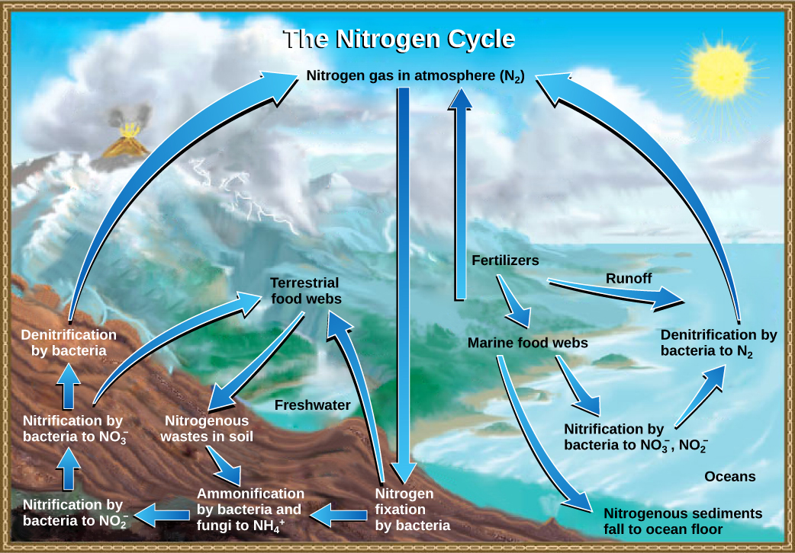
Human activity can release nitrogen into the environment by two primary means: the combustion of fossil fuels, which releases different nitrogen oxides, and by the use of artificial fertilizers (which contain nitrogen and phosphorus compounds) in agriculture, which are then washed into lakes, streams, and rivers by surface runoff. Atmospheric nitrogen (other than N2) is associated with several effects on Earth's ecosystems including the production of acid rain (as nitric acid, HNO3) and greenhouse gas effects (as nitrous oxide, N2O), potentially causing climate change. A major effect from fertilizer runoff is saltwater and freshwater eutrophication, a process whereby nutrient runoff causes the overgrowth of algae and a number of consequential problems.
A similar process occurs in the marine nitrogen cycle, where the ammonification, nitrification, and denitrification processes are performed by marine bacteria and archaea. Some of this nitrogen falls to the ocean floor as sediment, which can then be moved to land in geologic time by uplift of Earth's surface, and thereby incorporated into terrestrial rock. Although the movement of nitrogen from rock directly into living systems has been traditionally seen as insignificant compared with nitrogen fixed from the atmosphere, a recent study showed that this process may indeed be significant and should be included in any study of the global nitrogen cycle.
Phosphorus is an essential nutrient for living processes; it is a major component of nucleic acids and phospholipids, and, as calcium phosphate, makes up the supportive components of our bones. Phosphorus is often the limiting nutrient (necessary for growth) in aquatic, particularly freshwater, ecosystems.
Phosphorus occurs in nature as the phosphate ion (PO43-). In addition to phosphate runoff as a result of human activity, natural surface runoff occurs when it is leached from phosphate-containing rock by weathering, thus sending phosphates into rivers, lakes, and the ocean. This rock has its origins in the ocean. Phosphate-containing ocean sediments form primarily from the bodies of ocean organisms and from their excretions. However, volcanic ash, aerosols, and mineral dust may also be significant phosphate sources. This sediment then is moved to land over geologic time by the uplifting of Earth's surface. (Figure 20.13)
Phosphorus is also reciprocally exchanged between phosphate dissolved in the ocean and marine organisms. The movement of phosphate from the ocean to the land and through the soil is extremely slow, with the average phosphate ion having an oceanic residence time between 20,000 and 100,000 years.
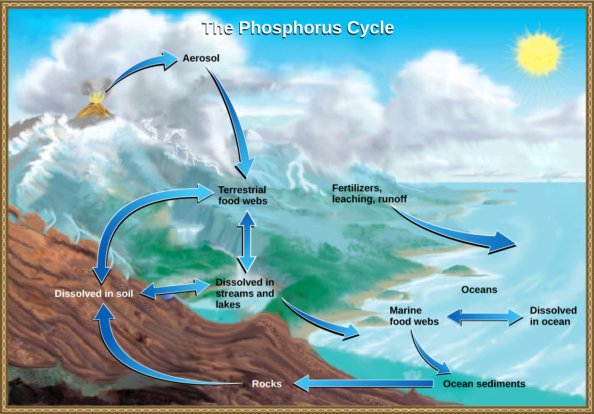
Excess phosphorus and nitrogen that enter these ecosystems from fertilizer runoff and from sewage cause excessive growth of algae. The subsequent death and decay of these organisms depletes dissolved oxygen, which leads to the death of aquatic organisms, such as shellfish and finfish. This process is responsible for dead zones in lakes and at the mouths of many major rivers and for massive fish kills, which often occur during the summer months (see Figure 20.14).
A dead zone is an area in lakes and oceans near the mouths of rivers where large areas are periodically depleted of their normal flora and fauna; these zones can be caused by eutrophication, oil spills, dumping toxic chemicals, and other human activities. The number of dead zones has increased for several years, and more than 400 of these zones were present as of 2008. One of the worst dead zones is off the coast of the United States in the Gulf of Mexico: fertilizer runoff from the Mississippi River basin created a dead zone of over 8,463 square miles. Phosphate and nitrate runoff from fertilizers also negatively affect several lake and bay ecosystems including the Chesapeake Bay in the eastern United States.
Describe the water cycle, including the processes of evaporation, condensation, precipitation, and groundwater flow. Explain the biological carbon cycle and the role of autotrophs and heterotrophs. Then describe the three steps of the terrestrial nitrogen cycle (ammonification, nitrification, denitrification) and explain what causes dead zones in aquatic ecosystems.
- Identify the two major abiotic factors that determine the type of terrestrial biome in an area
- Recognize distinguishing characteristics of each of the eight major terrestrial biomes
Earth's biomes can be either terrestrial or aquatic. Terrestrial biomes are based on land, while aquatic biomes include both ocean and freshwater biomes. The eight major terrestrial biomes on Earth are each distinguished by characteristic temperatures and amount of precipitation. Annual totals and fluctuations of precipitation affect the kinds of vegetation and animal life that can exist in broad geographical regions. Temperature variation on a daily and seasonal basis is also important for predicting the geographic distribution of a biome. Since a biome is defined by climate, the same biome can occur in geographically distinct areas with similar climates (Figure 20.18). There are also large areas on Antarctica, Greenland, and in mountain ranges that are covered by permanent glaciers and support very little life. Strictly speaking, these are not considered biomes and in addition to extremes of cold, they are also often deserts with very low precipitation.
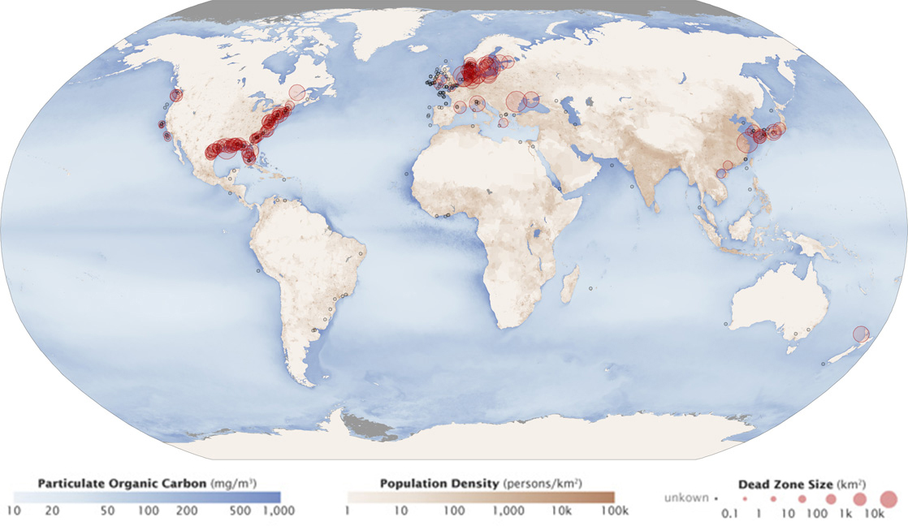
Tropical rainforests are also referred to as tropical wet forests. This biome is found in equatorial regions (Figure 20.18). Tropical rainforests are the most diverse terrestrial biome. This biodiversity is still largely unknown to science and is under extraordinary threat primarily through logging and deforestation for agriculture. Tropical rainforests have also been described as nature's pharmacy because of the potential for new drugs that is largely hidden in the chemicals produced by the huge diversity of plants, animals, and other organisms. The vegetation is characterized by plants with spreading roots and broad leaves that fall off throughout the year, unlike the trees of deciduous forests that lose their leaves in one season. These forests are "evergreen," year-round.
The temperature and sunlight profiles of tropical rainforests are stable in comparison to that of other terrestrial biomes, with average temperatures ranging from 20oC to 34oC (68oF to 93oF). Month-to-month temperatures are relatively constant in tropical rainforests, in contrast to forests further from the equator. This lack of temperature seasonality leads to year-round plant growth, rather than the seasonal growth seen in other biomes. In contrast to other ecosystems, a more constant daily amount of sunlight (11–12 hours per day) provides more solar radiation, thereby a longer period of time for plant growth.
The annual rainfall in tropical rainforests ranges from 250 cm to more than 450 cm (8.2–14.8 ft) with considerable seasonal variation. Tropical rainforests have wet months in which there can be more than 30 cm (11–12 in) of precipitation, as well as dry months in which there are fewer than 10 cm (3.5 in) of rainfall. However, the driest month of a tropical rainforest can still exceed the annual rainfall of some other biomes, such as deserts.
Tropical rainforests have high net primary productivity because the annual temperatures and precipitation values support rapid plant growth (Figure 20.19). However, the high rainfall quickly leaches nutrients from the soils of these forests, which are typically low in nutrients. Tropical rainforests are characterized by vertical layering of vegetation and the formation of distinct habitats for animals within each layer. On the forest floor is a sparse layer of plants and decaying plant matter. Above that is an understory of short, shrubby foliage. A layer of trees rises above this understory and is topped by a closed upper canopy—the uppermost overhead layer of branches and leaves. Some additional trees emerge through this closed upper canopy. These layers provide diverse and complex habitats for the variety of plants, animals, and other organisms within the tropical wet forests. Many species of animals use the variety of plants and the complex structure of the tropical wet forests for food and shelter. Some organisms live several meters above ground rarely ever descending to the forest floor.
Rainforests are not the only forest biome in the tropics; there are also tropical dry forests, which are characterized by a dry season of varying lengths. These forests commonly experience leaf loss during the dry season to one degree or another. The loss of leaves from taller trees during the dry season opens up the canopy and allows sunlight to the forest floor that allows the growth of thick ground-level brush, which is absent in tropical rainforests. Extensive tropical dry forests occur in Africa (including Madagascar), India, southern Mexico, and South America.
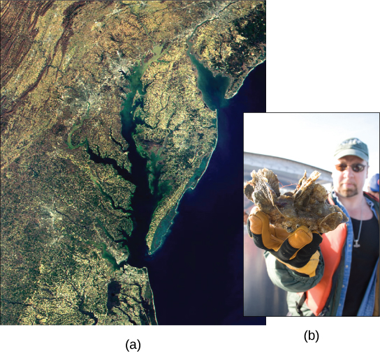
Savannas are grasslands with scattered trees, and they are found in Africa, South America, and northern Australia (Figure 20.18). Savannas are hot, tropical areas with temperatures averaging from 24oC –29oC (75oF –84oF) and an annual rainfall of 51–127 cm (20–50 in). Savannas have an extensive dry season and consequent fires. As a result, scattered in the grasses and forbs (herbaceous flowering plants) that dominate the savanna, there are relatively few trees (Figure 20.20). Since fire is an important source of disturbance in this biome, plants have evolved well-developed root systems that allow them to quickly re-sprout after a fire.
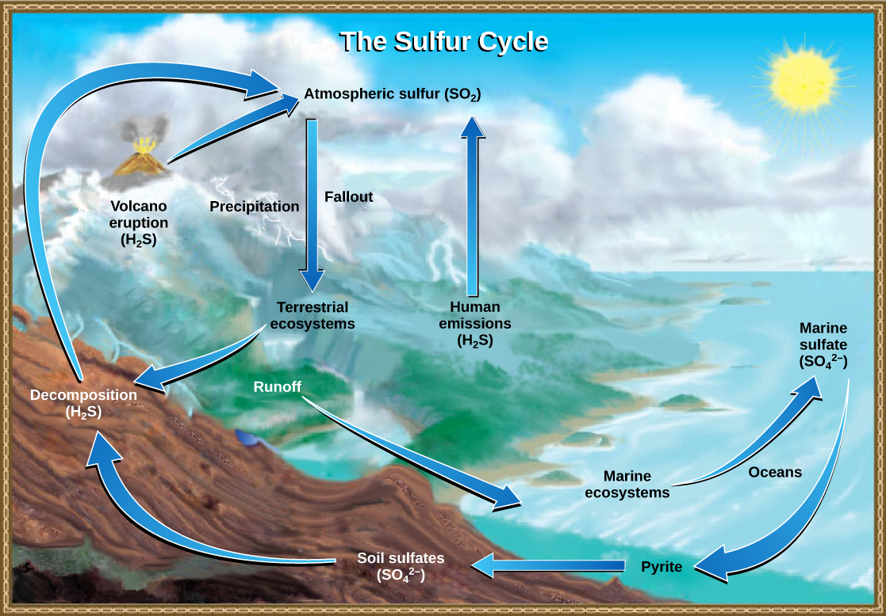
Subtropical deserts exist between 15o and 30o north and south latitude and are centered on the Tropic of Cancer and the Tropic of Capricorn (Figure 20.18). Deserts are frequently located on the downwind or lee side of mountain ranges, which create a rain shadow after prevailing winds drop their water content on the mountains. This is typical of the North American deserts, such as the Mohave and Sonoran deserts. Deserts in other regions, such as the Sahara Desert in northern Africa or the Namib Desert in southwestern Africa are dry because of the high-pressure, dry air descending at those latitudes. Subtropical deserts are very dry; evaporation typically exceeds precipitation. Subtropical hot deserts can have daytime soil surface temperatures above 60oC (140oF) and nighttime temperatures approaching 0oC (32oF). The temperature drops so far because there is little water vapor in the air to prevent radiative cooling of the land surface. Subtropical deserts are characterized by low annual precipitation of fewer than 30 cm (12 in) with little monthly variation and lack of predictability in rainfall. Some years may receive tiny amounts of rainfall, while others receive more. In some cases, the annual rainfall can be as low as 2 cm (0.8 in) in subtropical deserts located in central Australia ("the Outback") and northern Africa.
The low species diversity of this biome is closely related to its low and unpredictable precipitation. Despite the relatively low diversity, desert species exhibit fascinating adaptations to the harshness of their environment. Very dry deserts lack perennial vegetation that lives from one year to the next; instead, many plants are annuals that grow quickly and reproduce when rainfall does occur, then they die. Perennial plants in deserts are characterized by adaptations that conserve water: deep roots, reduced foliage, and water-storing stems (Figure 20.21). Seed plants in the desert produce seeds that can lie dormant for extended periods between rains. Most animal life in subtropical deserts has adapted to a nocturnal life, spending the hot daytime hours beneath the ground. The Namib Desert is the oldest on the planet, and has probably been dry for more than 55 million years. It supports a number of endemic species (species found only there) because of this great age. For example, the unusual gymnosperm Welwitschia mirabilis is the only extant species of an entire order of plants. There are also five species of reptiles considered endemic to the Namib.
In addition to subtropical deserts there are cold deserts that experience freezing temperatures during the winter and any precipitation is in the form of snowfall. The largest of these deserts are the Gobi Desert in northern China and southern Mongolia, the Taklimakan Desert in western China, the Turkestan Desert, and the Great Basin Desert of the United States.
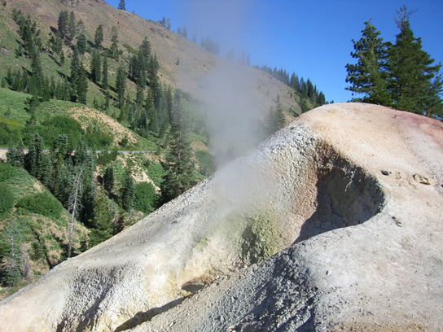
The chaparral is also called scrub forest and is found in California, along the Mediterranean Sea, and along the southern coast of Australia (Figure 20.18). The annual rainfall in this biome ranges from 65 cm to 75 cm (25.6–29.5 in) and the majority of the rain falls in the winter. Summers are very dry and many chaparral plants are dormant during the summertime. The chaparral vegetation is dominated by shrubs and is adapted to periodic fires, with some plants producing seeds that germinate only after a hot fire. The ashes left behind after a fire are rich in nutrients like nitrogen that fertilize the soil and promote plant regrowth. Fire is a natural part of the maintenance of this biome and frequently threatens human habitation in this biome in the U.S. (Figure 20.22).
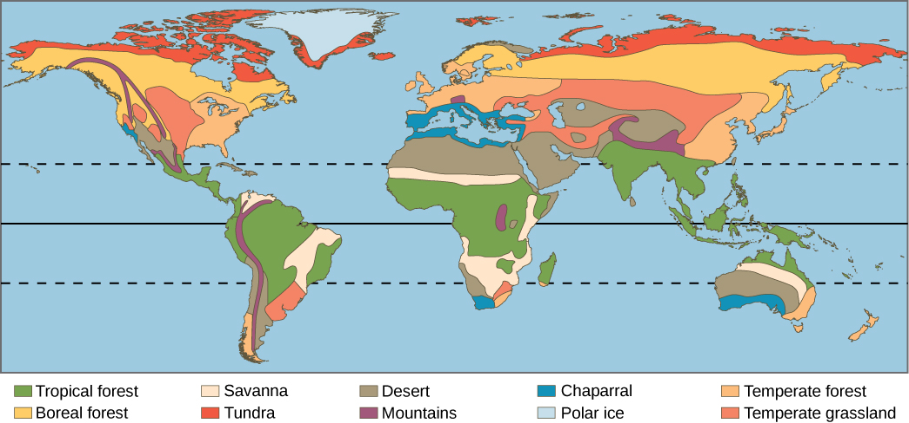
Temperate grasslands are found throughout central North America, where they are also known as prairies, and in Eurasia, where they are known as steppes (Figure 20.18). Temperate grasslands have pronounced annual fluctuations in temperature with hot summers and cold winters. The annual temperature variation produces specific growing seasons for plants. Plant growth is possible when temperatures are warm enough to sustain plant growth, which occurs in the spring, summer, and fall.
Annual precipitation ranges from 25.4 cm to 88.9 cm (10–35 in). Temperate grasslands have few trees except for those found growing along rivers or streams. The dominant vegetation tends to consist of grasses. The treeless condition is maintained by low precipitation, frequent fires, and grazing (Figure 20.23). The vegetation is very dense and the soils are fertile because the subsurface of the soil is packed with the roots and rhizomes (underground stems) of these grasses. The roots and rhizomes act to anchor plants into the ground and replenish the organic material (humus) in the soil when they die and decay.
Fires, which are a natural disturbance in temperate grasslands, can be ignited by lightning strikes. It also appears that the lightning-caused fire regime in North American grasslands was enhanced by intentional burning by humans. When fire is suppressed in temperate grasslands, the vegetation eventually converts to scrub and dense forests. Often, the restoration or management of temperate grasslands requires the use of controlled burns to suppress the growth of trees and maintain the grasses.
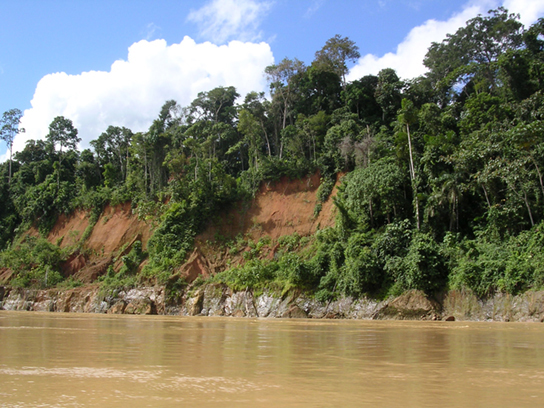
Temperate forests are the most common biome in eastern North America, Western Europe, Eastern Asia, Chile, and New Zealand (Figure 20.18). This biome is found throughout mid-latitude regions. Temperatures range between –30oC and 30oC (–22oF to 86oF) and drop to below freezing on an annual basis. These temperatures mean that temperate forests have defined growing seasons during the spring, summer, and early fall. Precipitation is relatively constant throughout the year and ranges between 75 cm and 150 cm (29.5–59 in).
Deciduous trees are the dominant plant in this biome with fewer evergreen conifers. Deciduous trees lose their leaves each fall and remain leafless in the winter. Thus, little photosynthesis occurs during the dormant winter period. Each spring, new leaves appear as temperature increases. Because of the dormant period, the net primary productivity of temperate forests is less than that of tropical rainforests. In addition, temperate forests show far less diversity of tree species than tropical rainforest biomes.
The trees of the temperate forests leaf out and shade much of the ground; however, more sunlight reaches the ground in this biome than in tropical rainforests because trees in temperate forests do not grow as tall as the trees in tropical rainforests. The soils of the temperate forests are rich in inorganic and organic nutrients compared to tropical rainforests. This is because of the thick layer of leaf litter on forest floors and reduced leaching of nutrients by rainfall. As this leaf litter decays, nutrients are returned to the soil. The leaf litter also protects soil from erosion, insulates the ground, and provides habitats for invertebrates and their predators (Figure 20.24).
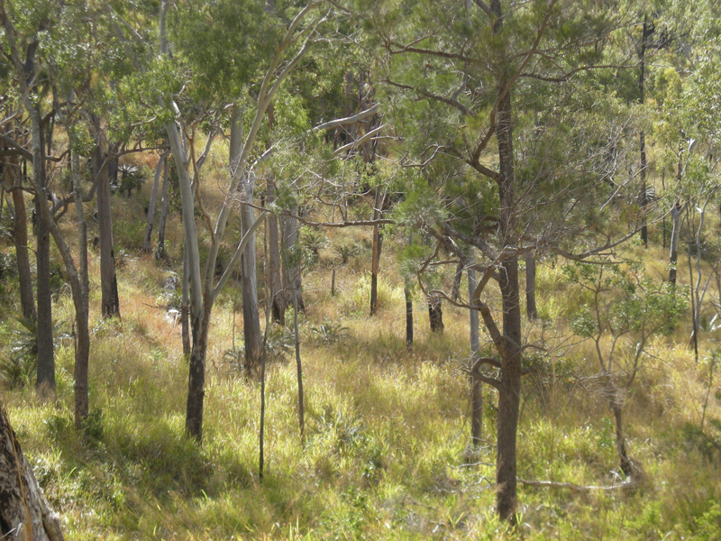
The boreal forest, also known as taiga or coniferous forest, is found roughly between 50o and 60o north latitude across most of Canada, Alaska, Russia, and northern Europe (Figure 20.18). Boreal forests are also found above a certain elevation (and below high elevations where trees cannot grow) in mountain ranges throughout the Northern Hemisphere. This biome has cold, dry winters and short, cool, wet summers. The annual precipitation is from 40 cm to 100 cm (15.7–39 in) and usually takes the form of snow; little evaporation occurs because of the cold temperatures.
The long and cold winters in the boreal forest have led to the predominance of cold-tolerant cone-bearing plants. These are evergreen coniferous trees like pines, spruce, and fir, which retain their needle-shaped leaves year-round. Evergreen trees can photosynthesize earlier in the spring than deciduous trees because less energy from the Sun is required to warm a needle-like leaf than a broad leaf. Evergreen trees grow faster than deciduous trees in the boreal forest. In addition, soils in boreal forest regions tend to be acidic with little available nitrogen. Leaves are a nitrogen-rich structure and deciduous trees must produce a new set of these nitrogen-rich structures each year. Therefore, coniferous trees that retain nitrogen-rich needles in a nitrogen limiting environment may have had a competitive advantage over the broad-leafed deciduous trees.
The net primary productivity of boreal forests is lower than that of temperate forests and tropical wet forests. The aboveground biomass of boreal forests is high because these slow-growing tree species are long-lived and accumulate standing biomass over time. Species diversity is less than that seen in temperate forests and tropical rainforests. Boreal forests lack the layered forest structure seen in tropical rainforests or, to a lesser degree, temperate forests. The structure of a boreal forest is often only a tree layer and a ground layer. When conifer needles are dropped, they decompose more slowly than broad leaves; therefore, fewer nutrients are returned to the soil to fuel plant growth (Figure 20.25).
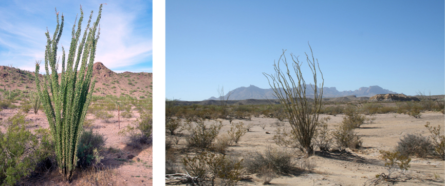
The Arctic tundra lies north of the subarctic boreal forests and is located throughout the Arctic regions of the Northern Hemisphere (Figure 20.18). Tundra also exists at elevations above the tree line on mountains. The average winter temperature is –34°C (–29.2°F) and the average summer temperature is 3°C–12°C (37°F –52°F). Plants in the Arctic tundra have a short growing season of approximately 50–60 days. However, during this time, there are almost 24 hours of daylight and plant growth is rapid. The annual precipitation of the Arctic tundra is low (15–25 cm or 6–10 in) with little annual variation in precipitation. And, as in the boreal forests, there is little evaporation because of the cold temperatures.
Plants in the Arctic tundra are generally low to the ground and include low shrubs, grasses, lichens, and small flowering plants (Figure 20.26). There is little species diversity, low net primary productivity, and low aboveground biomass. The soils of the Arctic tundra may remain in a perennially frozen state referred to as permafrost. The permafrost makes it impossible for roots to penetrate far into the soil and slows the decay of organic matter, which inhibits the release of nutrients from organic matter. The melting of the permafrost in the brief summer provides water for a burst of productivity while temperatures and long days permit it. During the growing season, the ground of the Arctic tundra can be completely covered with plants or lichens.
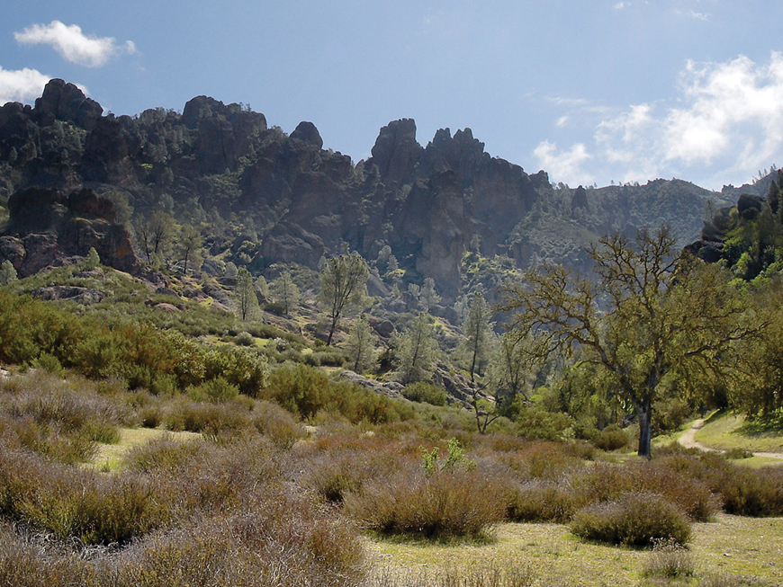
Name the two major abiotic factors that determine the type of terrestrial biome in an area. Compare and contrast at least three of the eight major terrestrial biomes, describing their climate, vegetation, and net primary productivity. Explain how fire plays a role in maintaining savannas, chaparral, and temperate grasslands.
- Describe the effects of abiotic factors on the composition of plant and animal communities in aquatic biomes
- Compare the characteristics of the ocean zones
- Summarize the characteristics of standing water and flowing water in freshwater biomes
Like terrestrial biomes, aquatic biomes are influenced by abiotic factors. In the case of aquatic biomes the abiotic factors include light, temperature, flow regime, and dissolved solids. The aquatic medium—water— has different physical and chemical properties than air. Even if the water in a pond or other body of water is perfectly clear (there are no suspended particles), water, on its own, absorbs light. As one descends deep enough into a body of water, eventually there will be a depth at which the sunlight cannot reach. While there are some abiotic and biotic factors in a terrestrial ecosystem that shade light (like fog, dust, or insect swarms), these are not usually permanent features of the environment. The importance of light in aquatic biomes is central to the communities of organisms found in both freshwater and marine ecosystems because it controls productivity through photosynthesis.
In addition to light, solar radiation warms bodies of water and many exhibit distinct layers of water at differing temperatures. The water temperature affects the organisms' rates of growth and the amount of dissolved oxygen available for respiration.
The movement of water is also important in many aquatic biomes. In rivers, the organisms must obviously be adapted to the constant movement of the water around them, but even in larger bodies of water such as the oceans, regular currents and tides impact availability of nutrients, food resources, and the presence of the water itself.
Finally, all natural water contains dissolved solids, or salts. Fresh water contains low levels of such dissolved substances because the water is rapidly recycled through evaporation and precipitation. The oceans have a relatively constant high salt content. Aquatic habitats at the interface of marine and freshwater ecosystems have complex and variable salt environments that range between freshwater and marine levels. These are known as brackish water environments. Lakes located in closed drainage basins concentrate salt in their waters and can have extremely high salt content that only a few and highly specialized species are able to inhabit.
The ocean is a continuous body of salt water that is relatively uniform in chemical composition. It is a weak solution of mineral salts and decayed biological matter. Within the ocean, coral reefs are a second type of marine biome. Estuaries, coastal areas where salt water and fresh water mix, form a third unique marine biome.
The ocean is categorized by several zones (Figure 20.28). All of the ocean's open water is referred to as the pelagic realm (or zone). The benthic realm (or zone) extends along the ocean bottom from the shoreline to the deepest parts of the ocean floor. From the surface to the bottom or the limit to which photosynthesis occurs is the photic zone (approximately 200 m or 650 ft). At depths greater than 200 m, light cannot penetrate; thus, this is referred to as the aphotic zone. The majority of the ocean is aphotic and lacks sufficient light for photosynthesis. The deepest part of the ocean, the Challenger Deep (in the Mariana Trench, located in the western Pacific Ocean), is about 11,000 m (about 6.8 mi) deep. To give some perspective on the depth of this trench, the ocean is, on average, 4267 m or 14,000 ft deep.
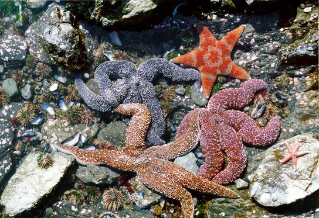
The physical diversity of the ocean has a significant influence on the diversity of organisms that live within it. The ocean is categorized into different zones based on how far light reaches into the water. Each zone has a distinct group of species adapted to the biotic and abiotic conditions particular to that zone.
The intertidal zone (Figure 20.28) is the oceanic region that is closest to land. With each tidal cycle, the intertidal zone alternates between being inundated with water and left high and dry. Generally, most people think of this portion of the ocean as a sandy beach. In some cases, the intertidal zone is indeed a sandy beach, but it can also be rocky, muddy, or dense with tangled roots in mangrove forests. The intertidal zone is an extremely variable environment because of tides. Organisms may be exposed to air at low tide and are underwater during high tide. Therefore, living things that thrive in the intertidal zone are often adapted to being dry for long periods of time. The shore of the intertidal zone is also repeatedly struck by waves and the organisms found there are adapted to withstand damage from the pounding action of the waves (Figure 20.27). The exoskeletons of shoreline crustaceans (such as the shore crab, Carcinus maenas) are tough and protect them from desiccation (drying out) and wave damage. Another consequence of the pounding waves is that few algae and plants establish themselves in constantly moving sand or mud.
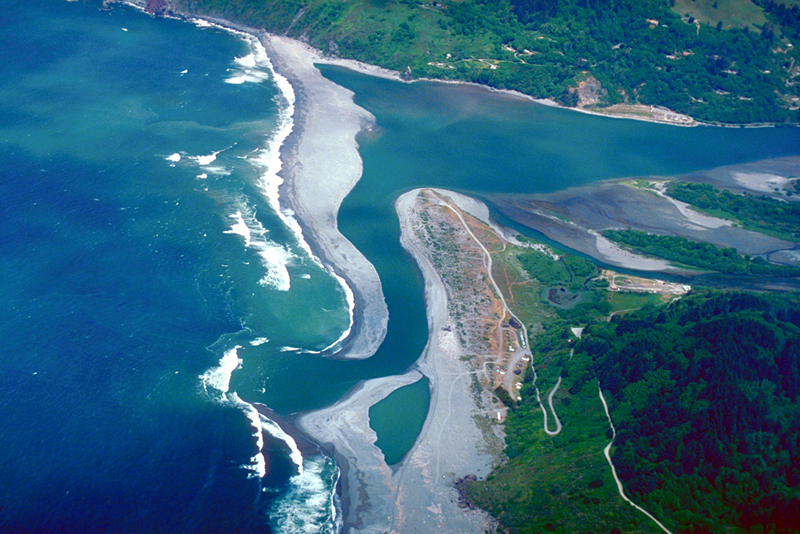
The neritic zone (Figure 20.28) extends from the margin of the intertidal zone to depths of about 200 m (or 650 ft) at the edge of the continental shelf. When the water is relatively clear, photosynthesis can occur in the neritic zone. The water contains silt and is well-oxygenated, low in pressure, and stable in temperature. These factors all contribute to the neritic zone having the highest productivity and biodiversity of the ocean. Phytoplankton, including photosynthetic bacteria and larger species of algae, are responsible for the bulk of this primary productivity. Zooplankton, protists, small fishes, and shrimp feed on the producers and are the primary food source for most of the world's fisheries. The majority of these fisheries exist within the neritic zone.
Beyond the neritic zone is the open ocean area known as the oceanic zone (Figure 20.28). Within the oceanic zone there is thermal stratification. Abundant phytoplankton and zooplankton support populations of fish and whales. Nutrients are scarce and this is a relatively less productive part of the marine biome. When photosynthetic organisms and the organisms that feed on them die, their bodies fall to the bottom of the ocean where they remain; the open ocean lacks a process for bringing the organic nutrients back up to the surface.
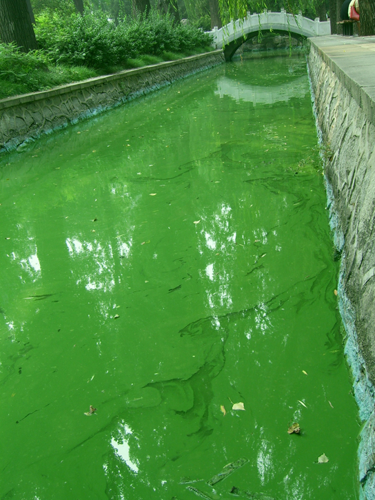
Beneath the pelagic zone is the benthic realm, the deepwater region beyond the continental shelf (Figure 20.28). The bottom of the benthic realm is comprised of sand, silt, and dead organisms. Temperature decreases as water depth increases. This is a nutrient-rich portion of the ocean because of the dead organisms that fall from the upper layers of the ocean. Because of this high level of nutrients, a diversity of fungi, sponges, sea anemones, marine worms, sea stars, fishes, and bacteria exists.
The deepest part of the ocean is the abyssal zone, which is at depths of 4000 m or greater. The abyssal zone (Figure 20.28) is very cold and has very high pressure, very low or no oxygen content, and high nutrient content as the dead and decomposing material that drifts down from the layers above. There are a variety of invertebrates and fishes found in this zone, but the abyssal zone does not have photosynthetic organisms. Chemosynthetic bacteria use the hydrogen sulfide and other minerals emitted from deep hydrothermal vents. These chemosynthetic bacteria use the hydrogen sulfide as an energy source and serve as the base of the food chain found around the vents.
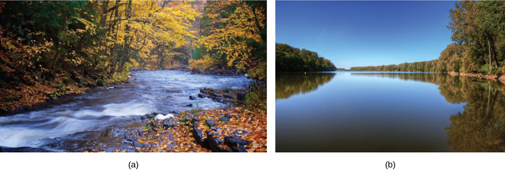
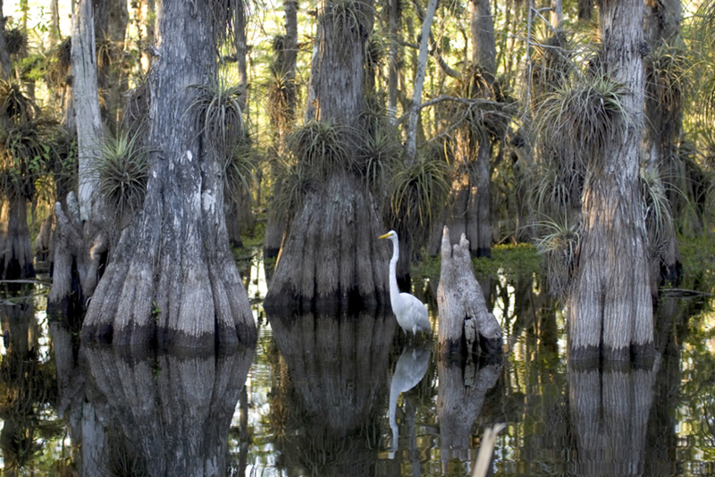
Coral reefs are ocean ridges formed by marine invertebrates living in warm shallow waters within the photic zone of the ocean. They are found within 30˚ north and south of the equator. The Great Barrier Reef is a well-known reef system located several miles off the northeastern coast of Australia. Other coral reefs are fringing islands, which are directly adjacent to land, or atolls, which are circular reefs surrounding a former island that is now underwater. The coral-forming colonies of organisms (members of phylum Cnidaria) secrete a calcium carbonate skeleton. These calcium-rich skeletons slowly accumulate, thus forming the underwater reef (Figure 20.29). Corals found in shallower waters (at a depth of approximately 60 m or about 200 ft) have a mutualistic relationship with photosynthetic unicellular protists. The relationship provides corals with the majority of the nutrition and the energy they require. The waters in which these corals live are nutritionally poor and, without this mutualism, it would not be possible for large corals to grow because there are few planktonic organisms for them to feed on. Some corals living in deeper and colder water do not have a mutualistic relationship with protists; these corals must obtain their energy exclusively by feeding on plankton using stinging cells on their tentacles.
Coral reefs are one of the most diverse biomes. It is estimated that more than 4000 fish species inhabit coral reefs. These fishes can feed on coral, the cryptofauna (invertebrates found within the calcium carbonate structures of the coral reefs), or the seaweed and algae that are associated with the coral. These species include predators, herbivores, or planktivores. Predators are animal species that hunt and are carnivores or "flesh eaters." Herbivores eat plant material, and planktivores eat plankton.
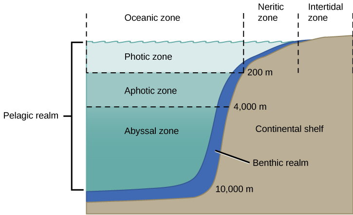
Estuaries are biomes that occur where a river, a source of fresh water, meets the ocean. Therefore, both fresh water and salt water are found in the same vicinity; mixing results in a diluted (brackish) salt water. Estuaries form protected areas where many of the offspring of crustaceans, mollusks, and fish begin their lives. Salinity is an important factor that influences the organisms and the adaptations of the organisms found in estuaries. The salinity of estuaries varies and is based on the rate of flow of its freshwater sources. Once or twice a day, high tides bring salt water into the estuary. Low tides occurring at the same frequency reverse the current of salt water (Figure 20.30).
The daily mixing of fresh water and salt water is a physiological challenge for the plants and animals that inhabit estuaries. Many estuarine plant species are halophytes, plants that can tolerate salty conditions. Halophytic plants are adapted to deal with salt water spray and salt water on their roots. In some halophytes, filters in the roots remove the salt from the water that the plant absorbs. Animals, such as mussels and clams (phylum Mollusca), have developed behavioral adaptations that expend a lot of energy to function in this rapidly changing environment. When these animals are exposed to low salinity, they stop feeding, close their shells, and switch from aerobic respiration (in which they use gills) to anaerobic respiration (a process that does not require oxygen). When high tide returns to the estuary, the salinity and oxygen content of the water increases, and these animals open their shells, begin feeding, and return to aerobic respiration.
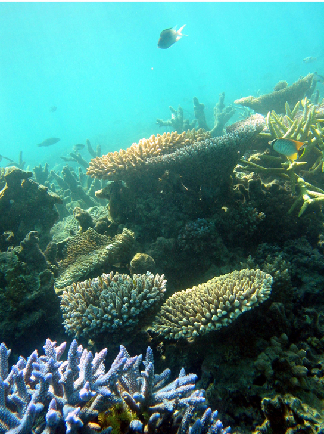
Freshwater biomes include lakes, ponds, and wetlands (standing water) as well as rivers and streams (flowing water). Humans rely on freshwater biomes to provide aquatic resources for drinking water, crop irrigation, sanitation, recreation, and industry. These various roles and human benefits are referred to as ecosystem services. Lakes and ponds are found in terrestrial landscapes and are therefore connected with abiotic and biotic factors influencing these terrestrial biomes.
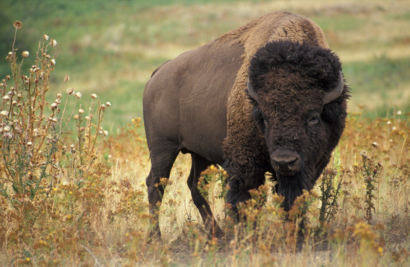
Lakes and ponds can range in area from a few square meters to thousands of square kilometers. Temperature is an important abiotic factor affecting living things found in lakes and ponds. During the summer in temperate regions, thermal stratification of deep lakes occurs when the upper layer of water is warmed by the Sun and does not mix with deeper, cooler water. The process produces a sharp transition between the warm water above and cold water beneath. The two layers do not mix until cooling temperatures and winds break down the stratification and the water in the lake mixes from top to bottom. During the period of stratification, most of the productivity occurs in the warm, well-illuminated, upper layer, while dead organisms slowly rain down into the cold, dark layer below where decomposing bacteria and cold-adapted species such as lake trout exist. Like the ocean, lakes and ponds have a photic layer in which photosynthesis can occur. Phytoplankton (algae and cyanobacteria) are found here and provide the base of the food web of lakes and ponds. Zooplankton, such as rotifers and small crustaceans, consume these phytoplankton. At the bottom of lakes and ponds, bacteria in the aphotic zone break down dead organisms that sink to the bottom.
Nitrogen and particularly phosphorus are important limiting nutrients in lakes and ponds. Therefore, they are determining factors in the amount of phytoplankton growth in lakes and ponds. When there is a large input of nitrogen and phosphorus (e.g., from sewage and runoff from fertilized lawns and farms), the growth of algae skyrockets, resulting in a large accumulation of algae called an algal bloom. Algal blooms (Figure 20.31) can become so extensive that they reduce light penetration in water. As a result, the lake or pond becomes aphotic and photosynthetic plants cannot survive. When the algae die and decompose, severe oxygen depletion of the water occurs. Fishes and other organisms that require oxygen are then more likely to die.
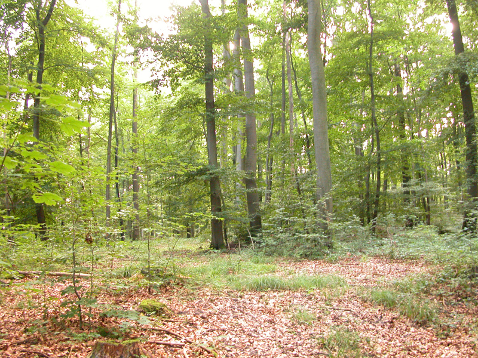
Rivers and the narrower streams that feed into the rivers are continuously moving bodies of water that carry water from the source or headwater to the mouth at a lake or ocean. The largest rivers include the Nile River in Africa, the Amazon River in South America, and the Mississippi River in North America (Figure 20.32).
Abiotic features of rivers and streams vary along the length of the river or stream. Streams begin at a point of origin referred to as source water. The source water is usually cold, low in nutrients, and clear. The channel (the width of the river or stream) is narrower here than at any other place along the length of the river or stream. Headwater streams are of necessity at a higher elevation than the mouth of the river and often originate in regions with steep grades leading to higher flow rates than lower elevation stretches of the river.
Faster-moving water and the short distance from its origin results in minimal silt levels in headwater streams; therefore, the water is clear. Photosynthesis here is mostly attributed to algae that are growing on rocks; the swift current inhibits the growth of phytoplankton. Photosynthesis may be further reduced by tree cover reaching over the narrow stream. This shading also keeps temperatures lower. An additional input of energy can come from leaves or other organic material that falls into a river or stream from the trees and other plants that border the water. When the leaves decompose, the organic material and nutrients in the leaves are returned to the water. The leaves also support a food chain of invertebrates that eat them and are in turn eaten by predatory invertebrates and fish. Plants and animals have adapted to this fast-moving water. For instance, some species of mayfly (phylum Arthropoda) have flattened bodies and legs with modified claws to help them cling to the underside of submerged rocks. This body form reduces drag and allows these species to benefit from the high oxygen concentrations in fast-moving currents without being dislodged. Freshwater trout species (phylum Chordata) are an important predator in these fast-moving rivers and streams.
As the river or stream flows away from the source, the width of the channel gradually widens, the current slows, and the temperature characteristically increases. The increasing width results from the increased volume of water from more and more tributaries. Gradients are typically lower farther along the river, which accounts for the slowing flow. With increasing volume can come increased silt, and as the flow rate slows, the silt may settle, thus increasing the deposition of sediment. Phytoplankton can also be suspended in slow-moving water. Therefore, the water will not be as clear as it is near the source. The water is also warmer as a result of longer exposure to sunlight and the absence of tree cover over wider expanses between banks. Worms (phylum Annelida) and insects (phylum Arthropoda) can be found burrowing into the mud. Predatory vertebrates (phylum Chordata) include waterfowl, frogs, and fishes. In heavily silt-laden rivers, these predators must find food in the murky waters, and, unlike the trout in the clear waters at the source, these vertebrates cannot use vision as their primary sense to find food. Instead, they are more likely to use taste or chemical cues to find prey.
When a river reaches the ocean or a large lake, the water typically slows dramatically and any silt in the river water will settle. Rivers with high silt content discharging into oceans with minimal currents and wave action will build deltas, low-elevation areas of sand and mud, as the silt settles onto the ocean bottom. Rivers with low silt content or in areas where ocean currents or wave action are high create estuarine areas where the fresh water and salt water mix.
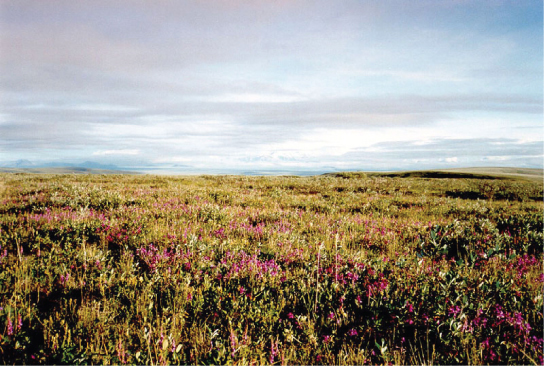
Wetlands are environments in which the soil is either permanently or periodically saturated with water. Wetlands are different from lakes and ponds because wetlands exhibit a near continuous cover of emergent vegetation. Emergent vegetation consists of wetland plants that are rooted in the soil but have portions of leaves, stems, and flowers extending above the water's surface. There are several types of wetlands including marshes, swamps, bogs, mudflats, and salt marshes (Figure 20.33).
Freshwater marshes and swamps are characterized by slow and steady water flow. Bogs develop in depressions where water flow is low or nonexistent. Bogs usually occur in areas where there is a clay bottom with poor percolation. Percolation is the movement of water through the pores in the soil or rocks. The water found in a bog is stagnant and oxygen depleted because the oxygen that is used during the decomposition of organic matter is not replaced. As the oxygen in the water is depleted, decomposition slows. This leads to organic acids and other acids building up and lowering the pH of the water. At a lower pH, nitrogen becomes unavailable to plants. This creates a challenge for plants because nitrogen is an important limiting resource. Some types of bog plants (such as sundews, pitcher plants, and Venus flytraps) capture insects and extract the nitrogen from their bodies. Bogs have low net primary productivity because the water found in bogs has low levels of nitrogen and oxygen.
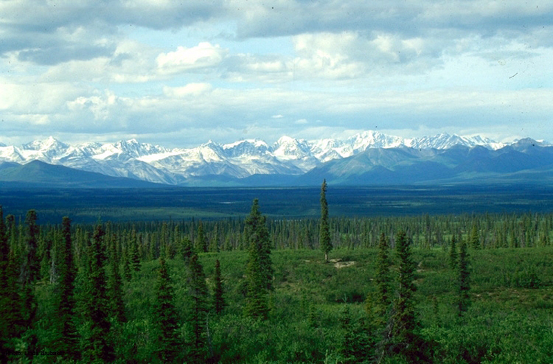
Describe the major ocean zones (intertidal, neritic, oceanic, abyssal) and the organisms adapted to each. Explain how estuaries challenge the organisms that live there. Compare freshwater biomes (lakes, rivers, wetlands) and describe how algal blooms form and their consequences.
- Energy Flow through Ecosystems (food chains/webs, trophic levels, ecological pyramids, 10% rule, productivity) — CB 20.1
- Biogeochemical Cycles (water, carbon, nitrogen, phosphorus cycles, dead zones, eutrophication) — CB 20.2
- Terrestrial Biomes (tropical rainforest, savanna, desert, chaparral, temperate grassland, temperate forest, boreal forest, arctic tundra) — CB 20.3
- Aquatic and Marine Biomes (freshwater/marine biomes, ocean zones, coral reefs, estuaries) — CB 20.4